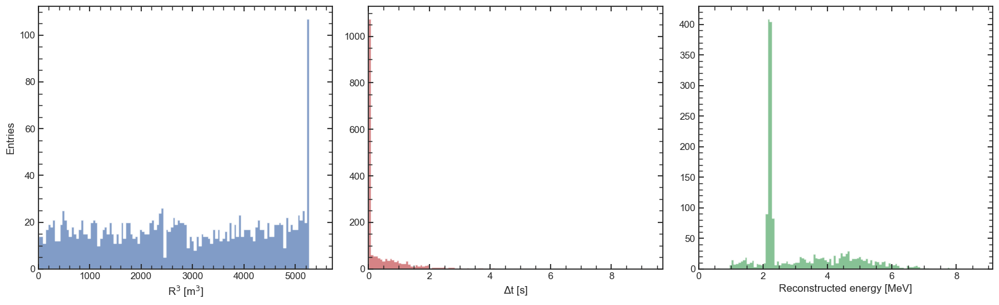
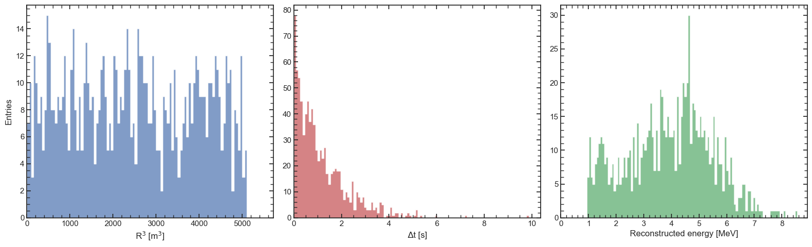
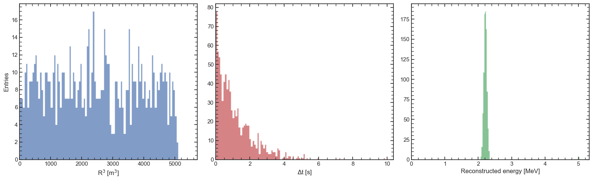
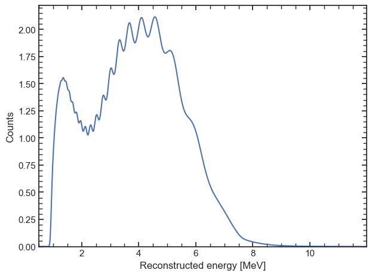
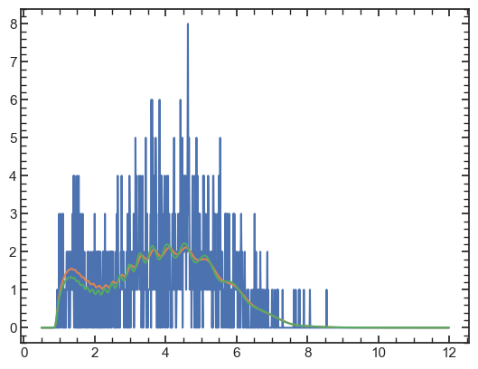
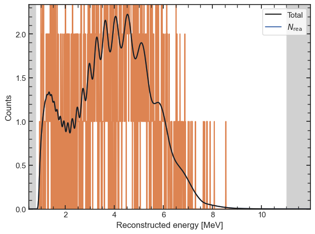
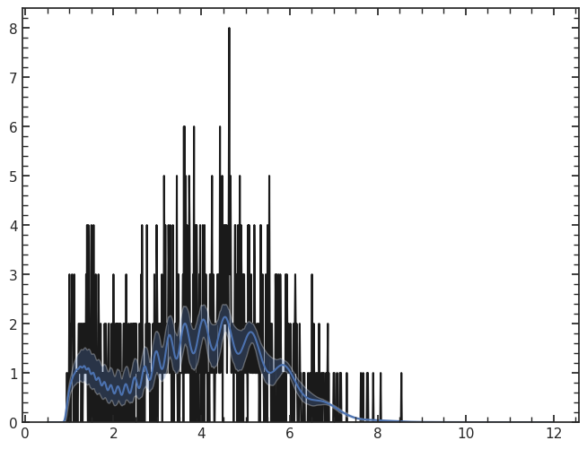
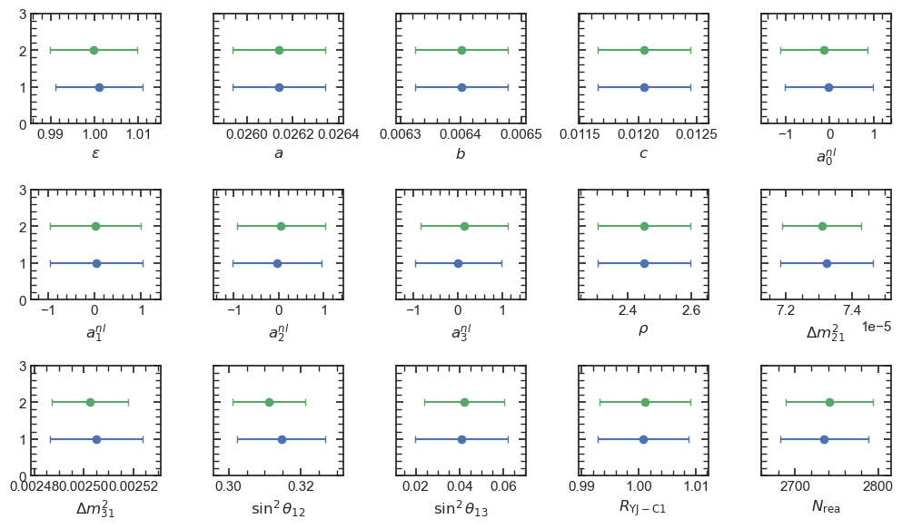

Opening a SNiPER EDM¶
[1]:
import orsa
import numpy as np
import matplotlib.pyplot as plt
import seaborn as sns
import matplotlib as mpl
sns.set(style = 'white')
mpl.rc('xtick.minor', visible = True)
mpl.rc('ytick.minor', visible = True)
mpl.rc('xtick', direction='in', top=True, bottom = True)
mpl.rc('ytick', direction='in', right=True, left = True)
[2]:
reco = orsa.sniper.load_edm('inputs/reactor_edm.root').to_list()
reco

[2]:
<orsa.spectrum.spectrum.ReconstructedEventList at 0x7fd063ace510>
[3]:
promptlist, delayedlist = orsa.selection.standard(reco)
[4]:
promptlist

[4]:
<orsa.spectrum.spectrum.ReconstructedEventList at 0x7fd060529390>
[5]:
delayedlist

[5]:
<orsa.spectrum.spectrum.ReconstructedEventList at 0x7fd0601e6f90>
Let’s try a fit¶
[6]:
model = orsa.model.Model(parameters = [], E_eval = np.arange(0.5, 12, 0.01), E_fit_min=0.8, E_fit_max=11, oscillation=orsa.oscillation.load(), detector=orsa.detector.load(), use_gpu=False, use_shape_uncertainty=True, rebin = 1, exposure = 1)
model.add_parameter(orsa.model.DetectorParameter(label = 'eff', value = 1, error = 0.01, prior = {'positive': None}, formatted_label = r'$\epsilon$'))
model.add_parameter(orsa.model.ResolutionParameter(label = 'a', value = 0.02614, error = 0.0077, prior = {'positive': None}, formatted_label = r'$a$'))
model.add_parameter(orsa.model.ResolutionParameter(label = 'b', value = 0.006401, error = 0.012, prior = {'positive': None}, formatted_label = r'$b$'))
model.add_parameter(orsa.model.ResolutionParameter(label = 'c', value = 0.01205, error = 0.033, prior = {'positive': None}, formatted_label = r'$c$'))
model.add_parameter(orsa.model.NonLinearityParameter(label = 'a0', value = 0, error = 1, is_relative=False, formatted_label = r'$a^{nl}_0$'))
model.add_parameter(orsa.model.NonLinearityParameter(label = 'a1', value = 0, error = 1, is_relative=False, formatted_label = r'$a^{nl}_1$'))
model.add_parameter(orsa.model.NonLinearityParameter(label = 'a2', value = 0, error = 1, is_relative=False, formatted_label = r'$a^{nl}_2$'))
model.add_parameter(orsa.model.NonLinearityParameter(label = 'a3', value = 0, error = 1, is_relative=False, formatted_label = r'$a^{nl}_3$'))
model.add_parameter(orsa.model.OscillationParameter(label = 'rho', value = 2.45, error = 0.06, prior = {'positive': None}, formatted_label = r'$\rho$'))
model.add_parameter(orsa.model.OscillationParameter(label = 'dm2_21', value = 7.53e-5, error = np.inf, formatted_label = r'$\Delta m^2_{21}$'))
model.add_parameter(orsa.model.OscillationParameter(label = 'dm2_31', value = 2.5283e-3, error = np.inf, formatted_label = r'$\Delta m^2_{31}$'))
model.add_parameter(orsa.model.OscillationParameter(label = 's2_12', value = 0.307, error = np.inf, formatted_label = r'$\sin^2 \theta_{12}$'))
model.add_parameter(orsa.model.OscillationParameter(label = 's2_13', value = 0.0218, error = np.inf, formatted_label = r'$\sin^2 \theta_{13}$'))
# norm_scale = 6*365.25 # 6 years
shape_fact = np.sqrt(36e-03/model.bin)
shape_fact_20 = np.sqrt(20e-03/model.bin)
gen_dict = dict()
gen_dict['rea'] = orsa.generator.reactor('HM_bump', isPDF=True, xs=model.detector.crosssection, shape_uncertainty='tao')
model.add_parameter(orsa.model.CoreParameter(label = 'YJ-C1', value = 1, error = 0.008, formatted_label = r'$R_\mathrm{YJ-C1}$', baseline = 52.74, power = 2.9))
model.add_parameter(orsa.model.NormalizationParameter(label = 'rea', value = promptlist.n, generator = gen_dict['rea'], error = 0.02, is_oscillated=True, has_duty=False, formatted_label = r'$N_\mathrm{rea}$'))
asimov = model.get_spectrum(asimov = True).to_hist()
asimov

[6]:
<orsa.spectrum.spectrum.ReconstructedSpectrum at 0x7fd05b79c990>
[7]:
data_hist = promptlist.to_hist(asimov.Eedges)
init_model = model.copy()
model.use_shape_uncertainty = False
cf = orsa.probability.CostFunction(ll=orsa.probability.chi2, model=model, data=data_hist, ll_args = dict(which = 'C'))
res = orsa.fit.minuit(cf)
Cost function parsed as chi2-like
[8]:
res.obj
[8]:
| Migrad | |
|---|---|
| FCN = 833.4 | Nfcn = 245 |
| EDM = 5.77e-05 (Goal: 0.0002) | time = 1.0 sec |
| Valid Minimum | Below EDM threshold (goal x 10) |
| No parameters at limit | Below call limit |
| Hesse ok | Covariance accurate |
| Name | Value | Hesse Error | Minos Error- | Minos Error+ | Limit- | Limit+ | Fixed | |
|---|---|---|---|---|---|---|---|---|
| 0 | eff: | 0.999 | 0.010 | |||||
| 1 | a: | 26.14e-3 | 0.20e-3 | |||||
| 2 | b: | 6.40e-3 | 0.08e-3 | |||||
| 3 | c: | 12.1e-3 | 0.4e-3 | |||||
| 4 | a0: | -0.1 | 1.0 | |||||
| 5 | a1: | 0 | 1 | |||||
| 6 | a2: | 0.1 | 1.0 | |||||
| 7 | a3: | 0.1 | 1.0 | |||||
| 8 | rho: | 2.45 | 0.15 | |||||
| 9 | dm2_21: | 72.7e-6 | 1.4e-6 | |||||
| 10 | dm2_31: | 2.506e-3 | 0.015e-3 | |||||
| 11 | s2_12: | 0.343 | 0.014 | |||||
| 12 | s2_13: | 0.075 | 0.022 | |||||
| 13 | YJ-C1: | 0.999 | 0.008 | |||||
| 14 | rea: | 2.71e3 | 0.05e3 |
| eff: | a: | b: | c: | a0: | a1: | a2: | a3: | rho: | dm2_21: | dm2_31: | s2_12: | s2_13: | YJ-C1: | rea: | |
|---|---|---|---|---|---|---|---|---|---|---|---|---|---|---|---|
| eff: | 9.25e-05 | 0 | 0e-9 | -0 | -0.02e-3 (-0.003) | -0.03e-3 (-0.003) | 0.09e-3 (0.009) | 0.02e-3 (0.002) | -0 (-0.001) | -284.6e-12 (-0.021) | 0.48e-9 (0.003) | 0.01e-3 (0.103) | 0.01e-3 (0.058) | -0 (-0.020) | -16.01e-3 (-0.034) |
| a: | 0 | 4.05e-08 | 0e-9 | 0 | 0.03e-6 | 0.12e-6 | -0.31e-6 (-0.002) | -0.05e-6 | -0 | -0.6e-12 (-0.002) | -0 | -0.01e-6 (-0.004) | 0.05e-6 (0.010) | -0 | 17.06e-6 (0.002) |
| b: | 0e-9 | 0e-9 | 5.9e-09 | 0e-9 | 5e-9 | 18e-9 | -48e-9 | -7e-9 | -0e-9 | -0.1e-12 | -0 | -1e-9 (-0.001) | 6e-9 (0.004) | 0e-9 | 2.227e-6 |
| c: | -0 | 0 | 0e-9 | 1.58e-07 | 0 | 0.03e-6 | -0.07e-6 | -0.03e-6 | -0 | -0.3e-12 | 0 | -0 | 0.02e-6 (0.002) | -0 | 10.05e-6 |
| a0: | -0.02e-3 (-0.003) | 0.03e-6 | 5e-9 | 0 | 1 | 0 | 0.0 | 0 | 0.000 | 2.0438e-9 (0.001) | -195.42e-9 (-0.013) | -0.17e-3 (-0.013) | -0.1e-3 (-0.003) | -0.02e-3 (-0.003) | 0.3 (0.006) |
| a1: | -0.03e-3 (-0.003) | 0.12e-6 | 18e-9 | 0.03e-6 | 0 | 0.979 | 0.0 | 0 | -0.000 (-0.001) | 11.2159e-9 (0.008) | 275.57e-9 (0.019) | -0.61e-3 (-0.046) | 0.8e-3 (0.035) | -0.01e-3 (-0.002) | -0.1 (-0.001) |
| a2: | 0.09e-3 (0.009) | -0.31e-6 (-0.002) | -48e-9 | -0.07e-6 | 0.0 | 0.0 | 0.945 | 0.0 | 0.000 (0.002) | -1.5543e-9 (-0.001) | 255.78e-9 (0.018) | 0.96e-3 (0.073) | -1.4e-3 (-0.063) | 0.05e-3 (0.006) | -1.0 (-0.022) |
| a3: | 0.02e-3 (0.002) | -0.05e-6 | -7e-9 | -0.03e-6 | 0 | 0 | 0.0 | 0.96 | 0.000 | -11.9060e-9 (-0.009) | -58.26e-9 (-0.004) | 0.36e-3 (0.027) | -0.3e-3 (-0.014) | 0.01e-3 (0.002) | 0.2 (0.004) |
| rho: | -0 (-0.001) | -0 | -0e-9 | -0 | 0.000 | -0.000 (-0.001) | 0.000 (0.002) | 0.000 | 0.0216 | -995.3e-12 (-0.005) | -5.56e-9 (-0.003) | 0.03e-3 (0.015) | -0 (-0.001) | -0 (-0.001) | -0.001 |
| dm2_21: | -284.6e-12 (-0.021) | -0.6e-12 (-0.002) | -0.1e-12 | -0.3e-12 | 2.0438e-9 (0.001) | 11.2159e-9 (0.008) | -1.5543e-9 (-0.001) | -11.9060e-9 (-0.009) | -995.3e-12 (-0.005) | 1.94e-12 | -0.8e-12 (-0.039) | -5.4117e-9 (-0.287) | -6.0764e-9 (-0.195) | -162.4e-12 (-0.015) | -5.6274122e-6 (-0.083) |
| dm2_31: | 0.48e-9 (0.003) | -0 | -0 | 0 | -195.42e-9 (-0.013) | 275.57e-9 (0.019) | 255.78e-9 (0.018) | -58.26e-9 (-0.004) | -5.56e-9 (-0.003) | -0.8e-12 (-0.039) | 2.13e-10 | 15.96e-9 (0.081) | -8.72e-9 (-0.027) | 0.40e-9 (0.003) | 20.11998e-6 (0.028) |
| s2_12: | 0.01e-3 (0.103) | -0.01e-6 (-0.004) | -1e-9 (-0.001) | -0 | -0.17e-3 (-0.013) | -0.61e-3 (-0.046) | 0.96e-3 (0.073) | 0.36e-3 (0.027) | 0.03e-3 (0.015) | -5.4117e-9 (-0.287) | 15.96e-9 (0.081) | 0.000183 | -0.10e-3 (-0.315) | 0.01e-3 (0.082) | 132.91e-3 (0.202) |
| s2_13: | 0.01e-3 (0.058) | 0.05e-6 (0.010) | 6e-9 (0.004) | 0.02e-6 (0.002) | -0.1e-3 (-0.003) | 0.8e-3 (0.035) | -1.4e-3 (-0.063) | -0.3e-3 (-0.014) | -0 (-0.001) | -6.0764e-9 (-0.195) | -8.72e-9 (-0.027) | -0.10e-3 (-0.315) | 0.000499 | 0.01e-3 (0.049) | 184.4e-3 (0.170) |
| YJ-C1: | -0 (-0.020) | -0 | 0e-9 | -0 | -0.02e-3 (-0.003) | -0.01e-3 (-0.002) | 0.05e-3 (0.006) | 0.01e-3 (0.002) | -0 (-0.001) | -162.4e-12 (-0.015) | 0.40e-9 (0.003) | 0.01e-3 (0.082) | 0.01e-3 (0.049) | 6.08e-05 | -11.59e-3 (-0.031) |
| rea: | -16.01e-3 (-0.034) | 17.06e-6 (0.002) | 2.227e-6 | 10.05e-6 | 0.3 (0.006) | -0.1 (-0.001) | -1.0 (-0.022) | 0.2 (0.004) | -0.001 | -5.6274122e-6 (-0.083) | 20.11998e-6 (0.028) | 132.91e-3 (0.202) | 184.4e-3 (0.170) | -11.59e-3 (-0.031) | 2.36e+03 |
[9]:
sp0 = init_model.get_spectrum(asimov=True)
sp1 = model.get_spectrum(asimov=True)
plt.plot(data_hist.E, data_hist.counts)
plt.plot(sp0.E, sp0.counts)
plt.plot(sp1.E, sp1.counts)
[9]:
[<matplotlib.lines.Line2D at 0x7fd05ba909d0>]

[10]:
fig, ax = model.get_fig()
ax.plot(data_hist.E, data_hist.counts, zorder = -10)
[10]:
[<matplotlib.lines.Line2D at 0x7fd05bfce7d0>]

[11]:
res.get_samples(10000)
orsa.plot.plot_ci(res, 1000, [3]) # Needs fix
/home/ubuntu/miniconda3/lib/python3.11/site-packages/orsa/fit/minimizers.py:152: RuntimeWarning: covariance is not symmetric positive-semidefinite.
samples = np.random.multivariate_normal(
0%| | 0/1000 [00:00<?, ?it/s]
100%|██████████| 1000/1000 [00:05<00:00, 194.72it/s]
[11]:
(<Figure size 800x600 with 1 Axes>, <Axes: >)

[12]:
cf_unb = orsa.probability.CostFunction(ll=orsa.probability.ll_unbinned, model = model, data=promptlist, ll_args=dict())
cf_unb.lp_args = cf.lp_args
res_unb = orsa.fit.minuit(cf_unb)
Cost function parsed as LogLikelihood-like
[13]:
orsa.plot.bars([res, res_unb], true_values=False);
